Overview & problem
White Pyramid Clothing’s digital experience had fallen behind modern shopping expectations. The redesign aimed to improve engagement, simplify shopping, and support conversions for a younger audience of artists, travelers, and board athletes who use clothing as self-expression.
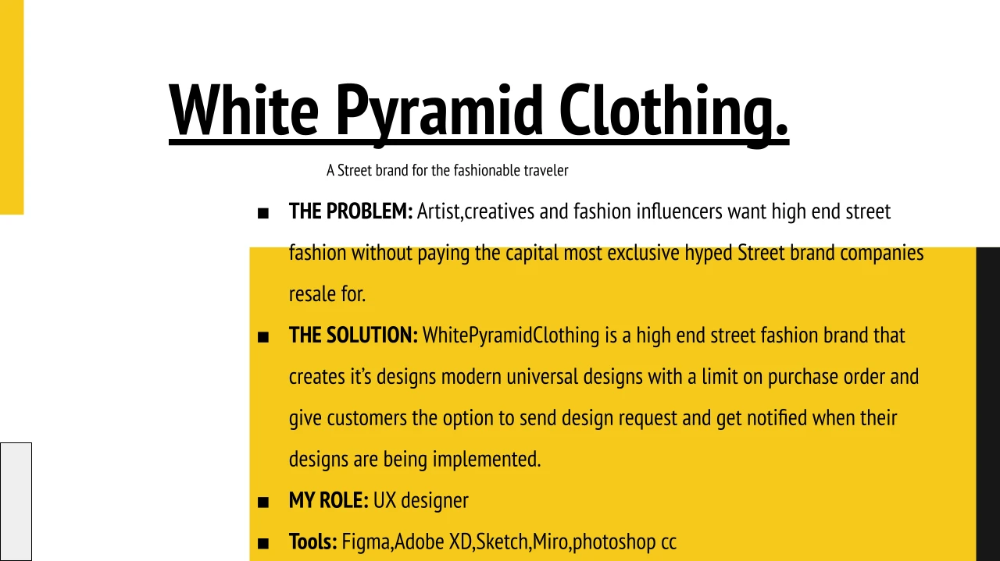
My role & team
UX Designer and Scrum Master, October–December 2021. I worked with another UX designer, a content strategist, a software engineer, and a project manager on a responsive website and mobile application.
User interviews
Discovery interviews helped us understand the audience’s perspective before deciding on a design direction. Research framed how the brand could connect with a younger, style-driven audience and informed the shopping experience.
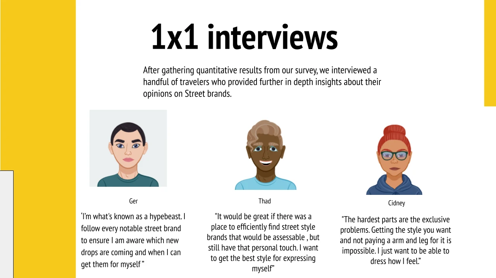
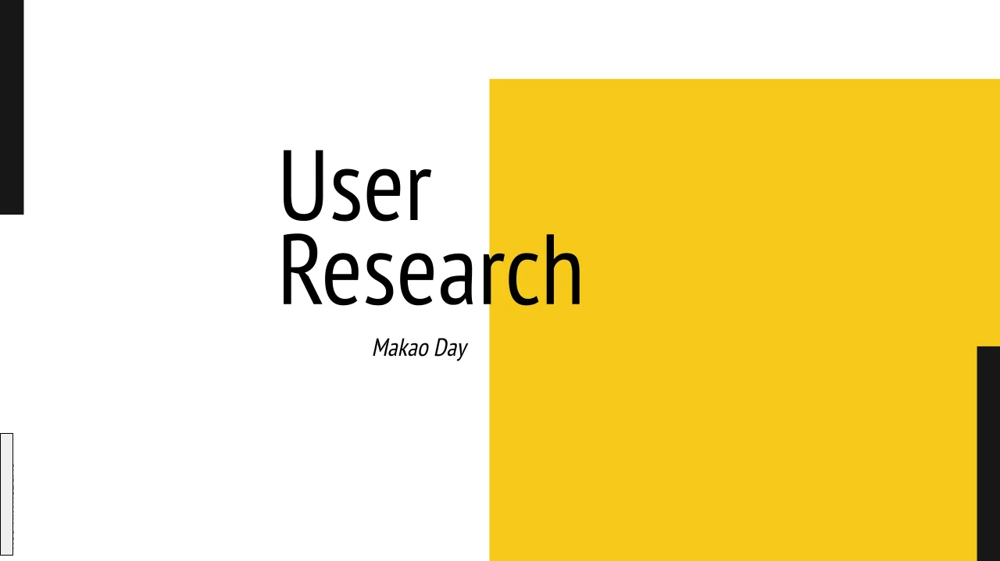
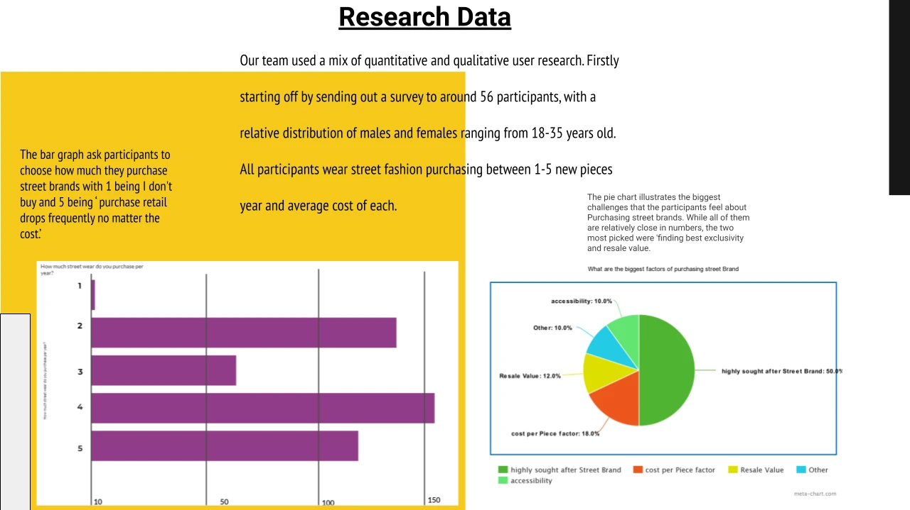
Information architecture & competitive analysis
Card sorting helped classify pain points, wants, and needs and set the direction for content development. We presented the synthesis to stakeholders. Competitive analysis examined industry trends and best practices to ground the redesign in established shopping patterns.
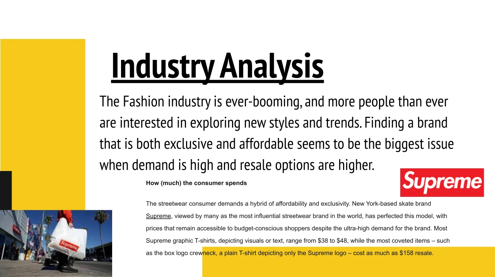
Planning, user flows & journey map
We translated discovery into the structure of the shopping journey, using user flows and a journey map to connect audience needs with navigation and screen design.
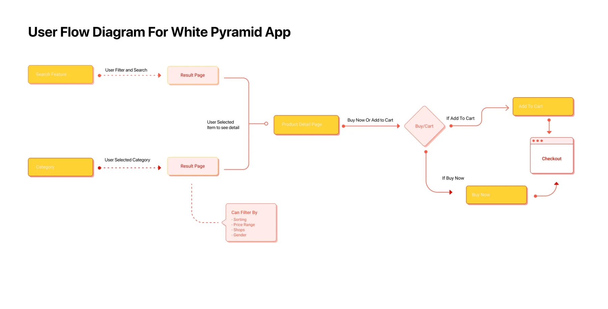
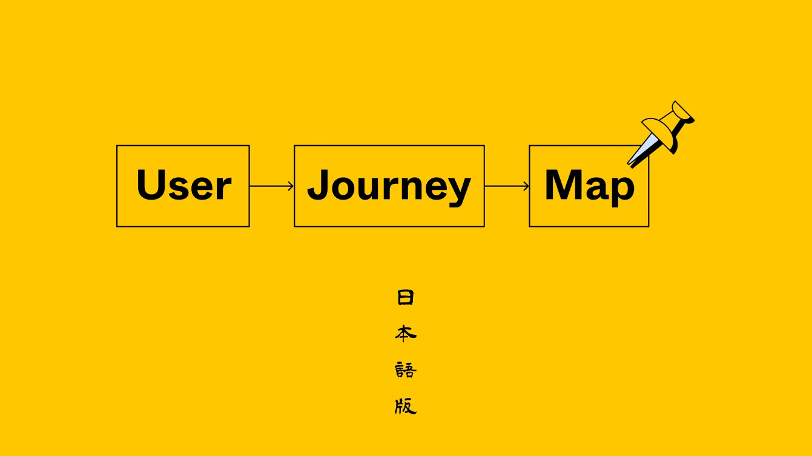
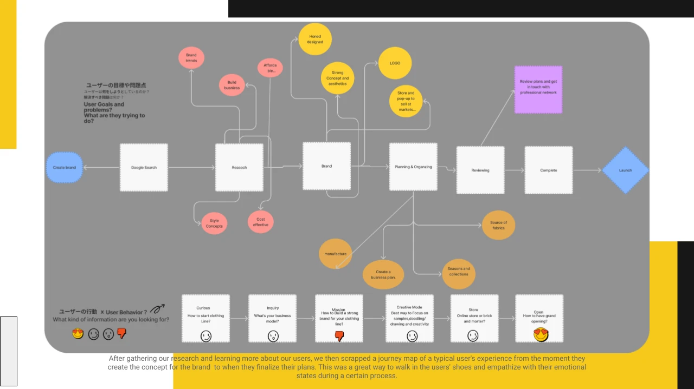
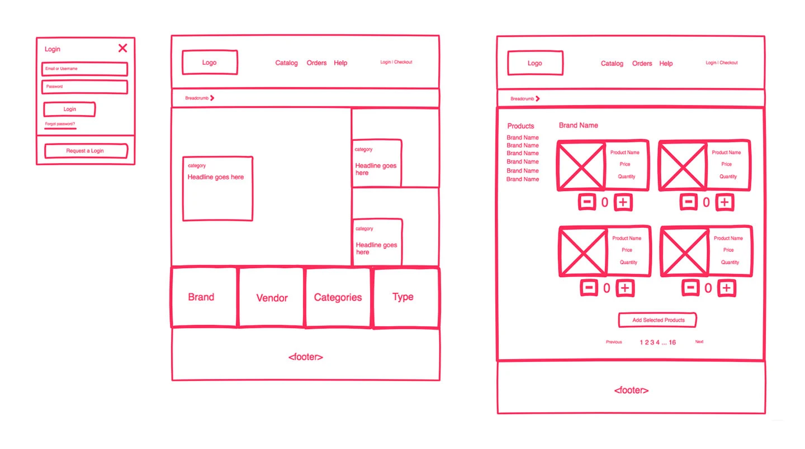
Sketches & wireframes
Low-fidelity sketches let us explore several directions quickly. Wireframes then supported testing and refinement of layout, navigation, and functionality before high-fidelity work.
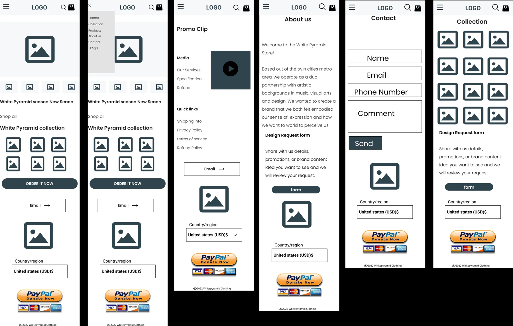
Prototypes & high-fidelity design
Stakeholder feedback and usability testing informed prototype iterations. Final screens were designed in Figma for development handoff with attention to iOS guidelines. Dark and light natural hues supported a brand direction inspired by Civil Regime and Supreme.
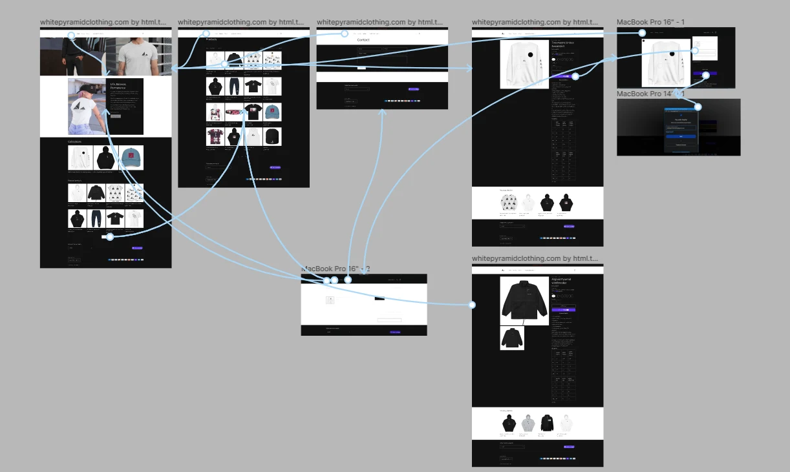
Development collaboration & evaluation
Regular developer reviews checked technical feasibility and informed iterations. Evaluation included usability testing with real users and monitoring against established metrics to inform future updates.
Outcome & takeaways
The original case study reports 20 iterations, 44 screens, and 20% more users. These are historical project figures; the source does not specify the measurement period or baseline for the user increase. The work I was proudest of was building a clear brand identity and position that communicated consistently to consumers.